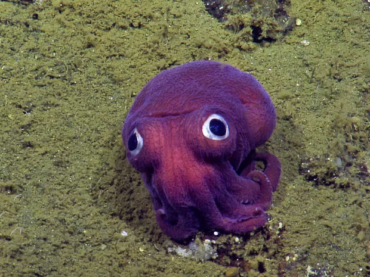

Polêmica sobre Neymar JR
Por:Kauê Gostosinho
O jogador de Futebol Neymar JR se assume gay após traumas em relacionamentos passados. E em busca de um amor ele começa a ter um relacionamento com o jogador de Futebol Vini JR
Livre para Amar

Por:Kauê Gostosinho
O jogador de Futebol Neymar JR se assume gay após traumas em relacionamentos passados. E em busca de um amor ele começa a ter um relacionamento com o jogador de Futebol Vini JR

Por: Marcelo Paludetto
Boas-vindas ao meu novo blog! Aqui vou compartilhar dicas de programação e curiosidades da área de tecnologia.